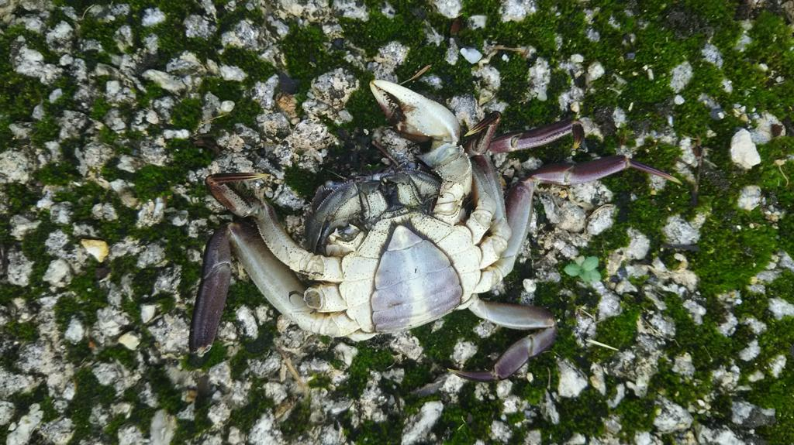
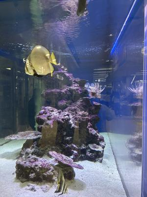

うるがいの話 ある日
最新: ワイヤレスイヤホン【うるがいの話 ある日】とは 一日だけのプログです
『うるがいの話』の最新一日だけのプログで、通信料が少なく経済的だ。カニの画像をクリックすると全ての日付が載る『うるがいの話』サイトを表示します
|
 |
【うるがいの話】 うるがい(ｳﾙｶﾞｲ urugai)とは、『もずくがに』の名前でとても大きくなります。 |
|---|---|
|
|
【カミマヤーの話】 猫のことを方言でマヤーといいます。カミマヤー（kamimayaa）とは、神の猫のことです。 |
|
【たながぁの音楽】 たながぁ（ﾀﾅｶﾞｰ tanagaa）とは手長えびのことで、何種類かあり大きいのは車 エビぐらいになります。 |

|
【ぶながぁの話】 ぶながぁ(ﾌﾞﾅｶﾞｰ bunagaa)とは、赤い髪の毛、赤い身体、そして身長は１ｍ２０ｃｍ ぐらい、川の蟹を食べているの目撃された。場所は沖縄県国頭郡大宜味村のと ある村僕の隣近所に住んでいる爺さんから、聞いた話です。 |
|
|
【ギーマの話】 ギーマ(giima)とは、山原の里山に咲くスズランに似た、 花を付けます。実は食べられます、 気が付くと口の周りが紫になっています。 |
2026年11月22日 (日）ワイヤレスイヤホン
16:23
同級生会名簿にあった住所をもとに、スマホのカーナビをワイ
ヤレスイヤホンを使ってバイクを運転しました。４年前の東御
廻り霊地１４か所で利用したのに、右側は壊れてました。早！
住所の前でバイクを止めると、家から人がでてきた。（脳梗塞
になった）友達はいますかと尋ねると、１０年前に引っ越しま
したよと言われた。フムフム、名簿にあった携帯番号へ『同級
生のうるがいです、電話を架けたいけどいいですか』とＳＭＳ
を打ち込み送信する。まだ返信はありません。補聴器、実はワ
イヤレスイヤホンです、ただ万が一落とすと怖いので今のとこ
ろ使いません。
その帰りに天気がいいのでそのまま浦添の５８号線を速度８０
キロで、かっ飛ばし泊魚市場へ行きました。
日曜日の泊魚市場、多くの人がいました。
きのうの夜、２２時３１分到着予定と運航状況にあったのに７
分遅れでした。水族館で、天ぷらにするととっても美味しいツ
バメ魚がいました。子供を、２３時にアパート前で降ろす。空
港が近いといいね。
